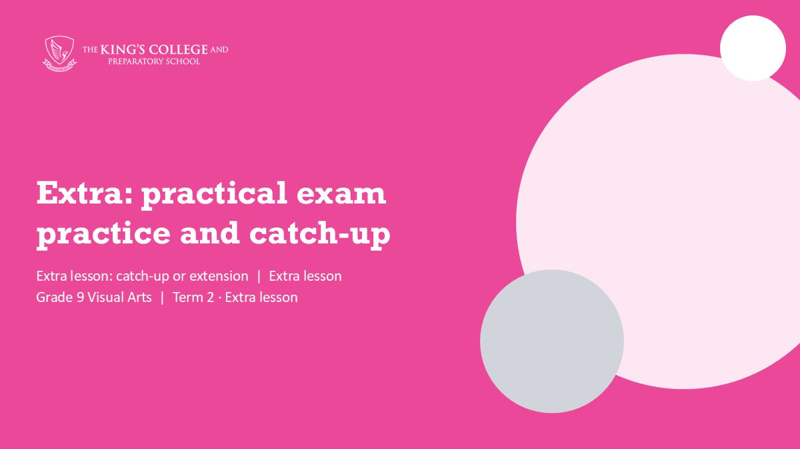

Term 2 · Extra lesson · Extra lesson: catch-up
Extra: practical exam practice and catch-up
Start here
Today I will
- Finish my lino design and tracing
- Check my design against the checklist
- Be ready to start cutting in Term 3
Think first
Hold your lino design at arm's length. Is it bold enough to read from across the room?
Words to Know
| Word | Meaning |
|---|---|
| Mirror image | The print is reversed left to right compared with the block. |
| High contrast | Strong black and white with few or no greys. |
| Tracing paper | Thin, see-through paper used to copy or transfer a drawing. |
| Positive and negative space | The subject and the space around it; in lino you decide which prints black. |
Slides

Notes
Practise for the practical exam (a textured and a shiny object in charcoal) or finish Term 2 work.
Ready for Term 3? Design checklist
- Fits the block: Drawn to the exact block size, with a border or background.
- About half black: A good balance of black and white areas.
- No tiny details: Lines thinner than a gouge cut are thickened or removed.
- Words reversed: Any text is written backwards.
- Tracing done: The final design is traced in soft pencil and taped into the journal.
Fixing a weak design
| Problem | Fix |
|---|---|
| Mostly white with thin outlines | Fill the background or the subject with black, or add a pattern. |
| Too many small details | Simplify: keep the shapes you would recognise from across the room. |
| Subject floats in empty space | Make it bigger, or add a border or ground line. |
Remember
Bold and simple prints best.
Practical
You need: Visual journal, 6B pencil or marker, tracing paper, charcoal and putty eraser for catch-up
Finish the lino design
- Check your lino design against the checklist and fix anything missing.
- Trace the final design in soft pencil if you have not done so.
- Tape the tracing beside the design in your visual journal.
- If you are finished, catch up on unfinished charcoal practice or help a partner check their design.
Test yourself
- Is your design about half black and half white?
- Why do very thin lines not work in lino?
- What must you do to any words in your design?
Show answers
1. Own answer. 2. They break off or fill with ink. 3. Write them backwards so they print the right way.
Finished early?
Design check-up
Test your lino design against the checklist.
- Hold your design next to the checklist: fits the block, about half black, no tiny details, words reversed, tracing done.
- Circle any line in your design thinner than a gouge cut and thicken it.
- In your visual journal, draw a small version of one area with more pattern.
- Write which part of your design you are most proud of.